Summer 2026
Lansing Delta Township Assembly13-week Industrial Engineering internship focused on manufacturing systems, process improvement, floor validation, automation, ergonomics, reliability, and standardized work.
Industrial Engineering · Texas Tech · Class of 2028
Industrial Engineering student with minors in Computer Science and Interdisciplinary Robotics, combining manufacturing systems, automation, process improvement, robotics, and technical leadership.
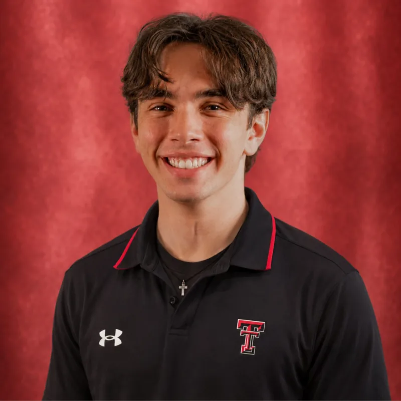
Start here
The site is organized by what a recruiter, engineer, or collaborator is most likely looking for—not by every individual project.
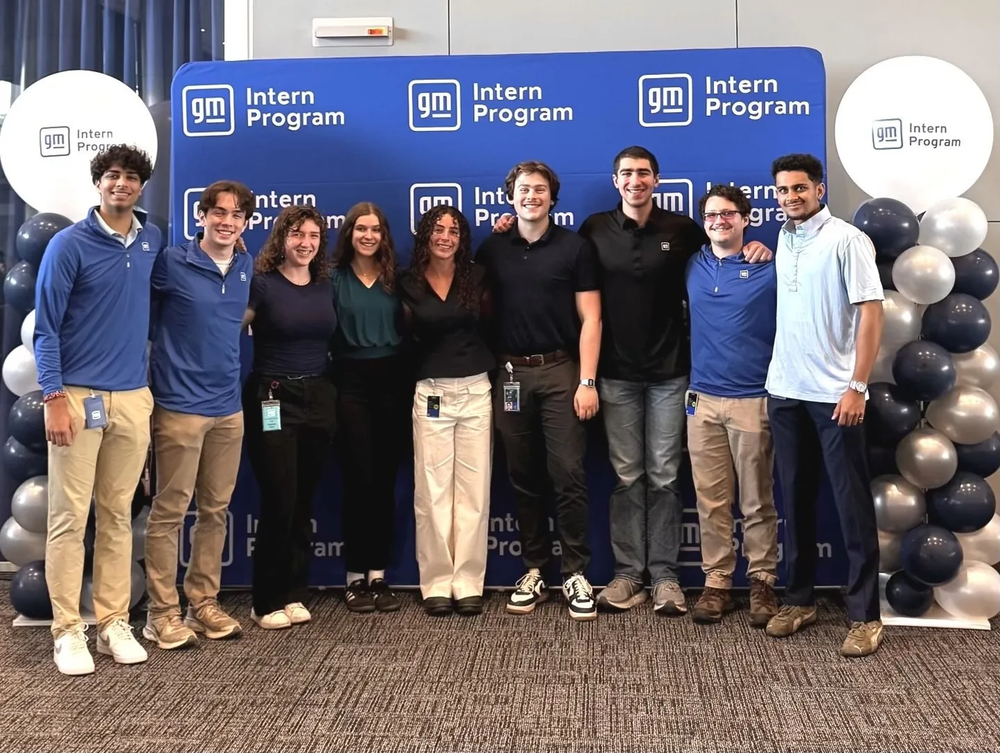
Experience
Manufacturing systems, automation, ergonomics, validation, reliability, and floor-level process improvement.
Summer 2026
Lansing Delta Township Assembly13-week Industrial Engineering internship focused on manufacturing systems, process improvement, floor validation, automation, ergonomics, reliability, and standardized work.
Incoming · Summer 2027
Arlington AssemblyReturning to GM for a second manufacturing-focused Industrial Engineering rotation with broader plant-floor experience from LDT.
Selected work
Each project is shown the same way: what it was, what I did, and the result or technical focus.
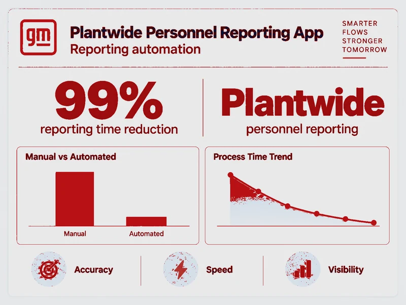
Automation · Reporting
Built an internal reconciliation/reporting workflow that removed repetitive manual steps, improved consistency, and cut reporting time by roughly 99%.
Impact · ~99% workflow-time reduction
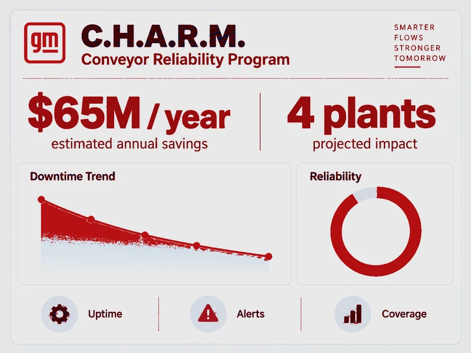
Reliability · Applied Research
Supported Conveyor Alerting and Real-time Monitoring work with an applied research group, contributing engineering design support for conveyor reliability and condition awareness.
Focus · conveyor reliability & monitoring
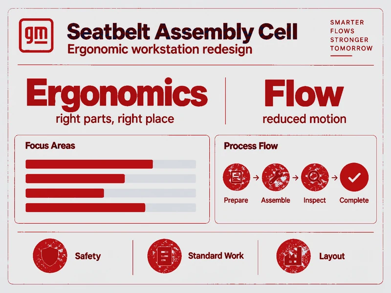
Layout · Ergonomics
Improved workstation layout and operator flow with an emphasis on reducing unnecessary motion, simplifying material interaction, and minimizing avoidable human tasks.
Focus · motion reduction & operator flow
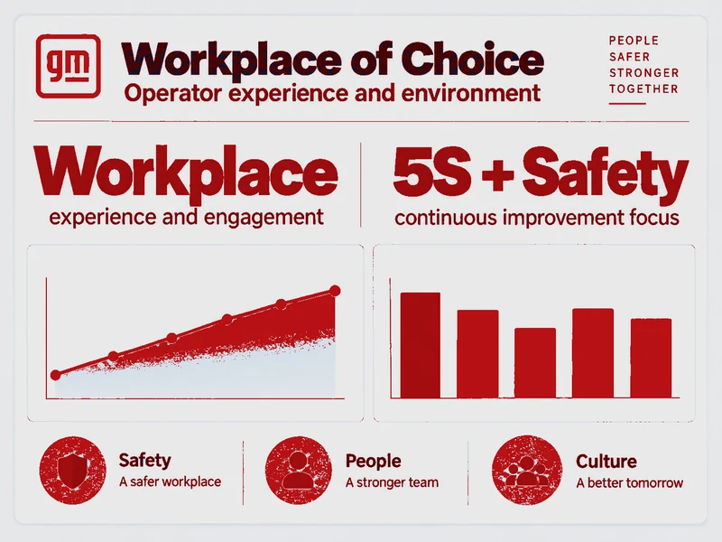
Workforce Analytics · Decision Support
Developed internal decision-support work for part-time temporary hiring research, helping organize workforce information into a more usable format for planning discussions.
Focus · workforce decision support
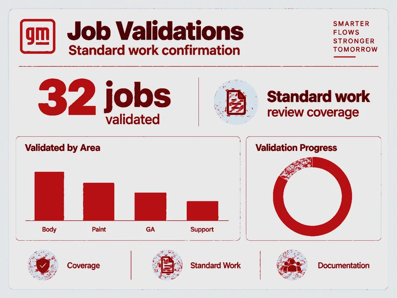
Work Design · Standardized Work
Completed 32 job validations evaluating operator work content, cycle time, standardized work, and ergonomic considerations directly on the manufacturing floor.
Scope · 32 manufacturing job validations
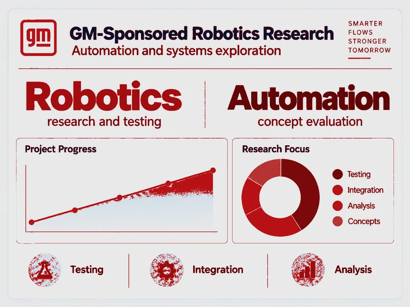
Robotics · Manufacturing Technology
Supported in-plant robotics work involving controls, end-effector design/fabrication, and collaboration with GM visual and automation resources.
Focus · controls & end-effector development
IE approach
Observe the process → quantify the problem → improve the system → validate on the floor → standardize the result.Leadership
Building an engineering organization around competition, ownership, real technical work, and repeatable member development.
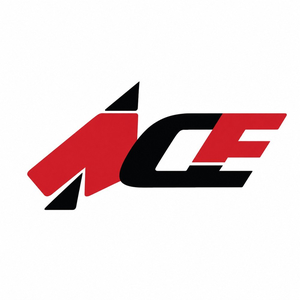
I founded ACE to give students a place to learn engineering by actually designing, manufacturing, testing, competing, and leading.
Founded 2024 · Dedicated ACE Lab at Reese Technology Center
What I built
ACE is structured to turn interest into repeatable technical experience, project ownership, and leadership.
Organization Growth
Created the organization, officer structure, onboarding process, communication systems, and a technical culture centered on building.
Lab & Operations
Established lab access, safety expectations, proper attire, project standards, tooling practices, and organized lab days.
Combat Robotics
Teams own design, CAD, fabrication, testing, repair, match preparation, and competition execution from start to finish.
Member Development
CAD, Python/C++, 3D printing, fabrication, simulations, design reviews, project planning, and technical communication.
Research & Design
Short-cycle design challenges and faculty/industry-connected collaboration give members multiple ways to build real engineering experience.
Events & Partnerships
Fight Night, exhibitions, open lab days, FTC support, and collaboration with TRA on RI3D-style robotics events.
Selected builds
Examples of design, integration, fabrication, testing, tuning, and iteration.
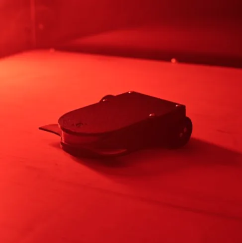
ACE Combat Robot
Compact ACE combat robot work focused on packaging, fabrication, drivetrain refinement, and early testing in the arena.
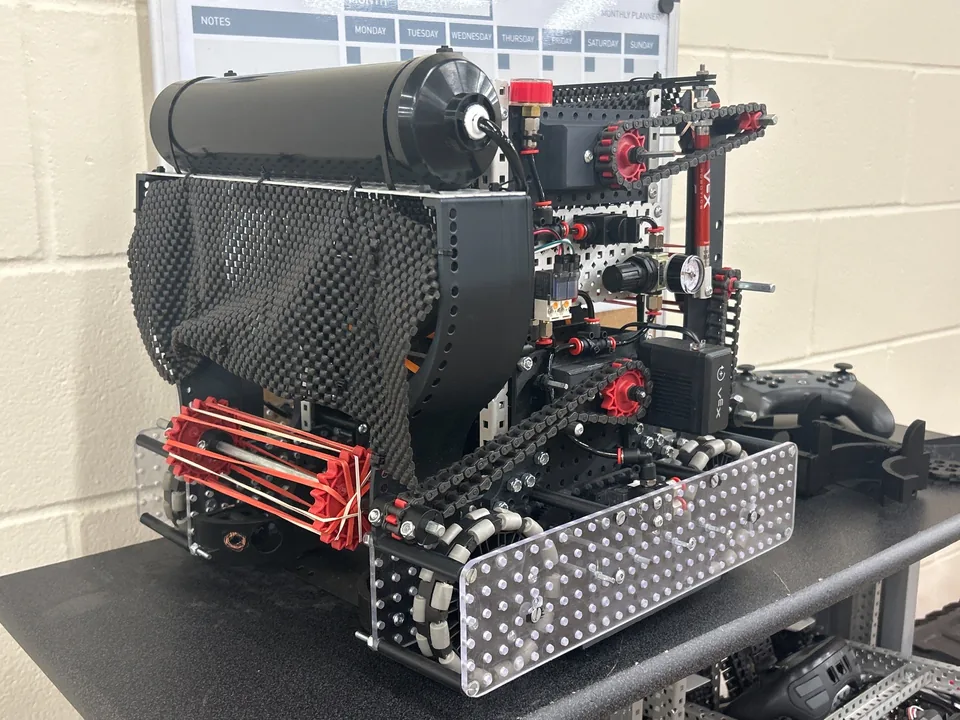
ACE VEX Project
VEX robot development involving mechanical build work, subsystem integration, structure, and iterative design refinement.
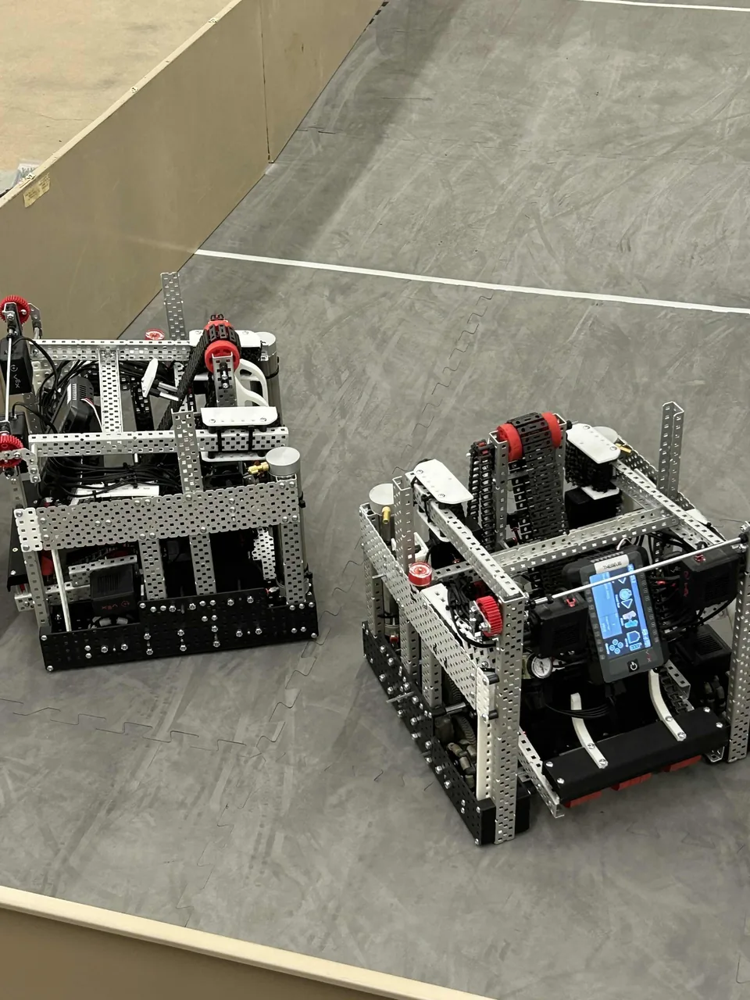
ACE Arena Testing
Two ACE robots staged in the arena for testing, tuning, iteration, and driver practice during active development.
Education & Skills
Academic direction: manufacturing systems, automation, operations research, quality, process improvement, work design, optimization, and robotics.
Texas Tech University
Edward E. Whitacre Jr. College of Engineering · Expected May 2028
Programming and computational problem solving
Robotics systems and applied automation
Coursework
Technical skills
Tools are grouped into six practical categories so the page can be scanned instead of read as one long list.
Robotics
Competition robotics developed my engineering fundamentals; assistive robotics connects that experience to practical independence and human-centered design.
MegaKnytes 11093 · FIRST Tech Challenge
Team Captain & Hardware Lead, 2022–2024. Led mechanical direction, build integration, competition preparation, rapid pit repairs, technical decision-making, and hardware iteration.
Still involved: mentor for Teams 11093 and 11719, and continue supporting West Texas FTC as a referee and judge.
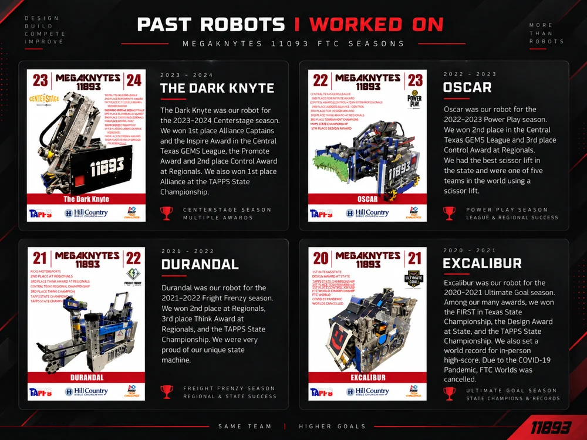
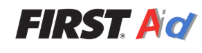
FIRST AID Robotics
FIRST AID Robotics was initiated by MegaKnytes FTC Team 11093 in partnership with FIRST. The program brings robotics teams together to design and build Simple Task Assist Robots (STARs) for people with mobility limitations.
Build a repository of free STAR designs robotics teams can use, improve, and share.
Connect families with existing STAR designs or teams that can help develop customized solutions.
Apply design, fabrication, controls, and outreach skills to assistive engineering.
Bring design expertise and resources together to support materials, development, and program growth.
Organizations
Leadership, Industrial Engineering, computing, and robotics outreach—shown as four concise entries.
ACE · Competitive Engineering
Founded and lead ACE, a 35-member multidisciplinary engineering organization with 8 combat-robot teams, a dedicated lab, technical training, design competition, research collaboration, and robotics events.
Competition · Research · Combat Robotics
IISE · Industrial & Systems Engineering
Professional development in systems thinking, process improvement, quality, analytics, work design, operations research, and manufacturing systems.
Six Sigma Green Belt Certification
ACM · Computing
Supports my Computer Science minor and continued growth in programming, computational problem solving, software development, and engineering automation.
Python Developer Certification · Data Analytics Certification
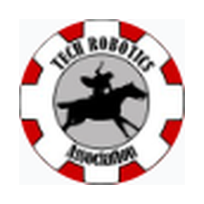
TRA · Robotics Outreach
Robotics outreach, FTC event support, mentorship, and collaboration with the West Texas robotics community—including joint technical events such as RI3D.
Robotics · FTC · Outreach · Events